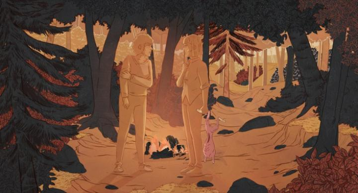

I went into "Death Does Not Exist" virtually blind. The title, synposis (if you can find it), and promotional posters tell almost no hint of what the movie is about. The only things I knew: it was a Canadian-French co-production, and that at the Fantasia Film Festival, it quickly sold out. Thankfully, the Ottawa International Animation Festival gave me a second chance to see it, and there, it would win the top feature film award.What blew me away first, making the biggest impression, was the animation. "Death Does Not Exist" makes a bold choice in its visual style, the biggest choice being to limit the number of colours on screen at any time. Often, there's as little as two, but usually no more than perhaps five, basic colours in a frame, with varying highlights and shadows of those colours. Usually colours like green, gold, blue, brown, red, black or white. Human characters are rendered in a single colour, usually indicating if they are in shadow or in full light, for example often rendered in green. It's those highlights, and sparse outlines, that give shape and structure to characters and their scene. It's simple, and not always pretty to look at in a still frame, but that it works at all is an experiment that art students will appreciate. And it's this simplicity that makes the animation all the more effective. As seen in the first shots, highlights are crtiical for giving shape and a sense of lighting, and those highlights are animated, sometimes more often than the shapes they rest on. As a sun rises, these highlights move from left to right on massive golden statues in a greenhouse garden. And it appears to be all animated by hand. CGI would be the obvious choice for such a basic scene, but this movie commits wholeheartedly to its choice of 2D animation, for everything. As visions become more abstract, rendering earthquakes that roll through a town like balloons of air, or the details of the inards of sheep eaten by wolves, that dedication to drawing everything by hand doesn't let up. If any 3D models were used directly in the scene or simply as reference, I'd forgive it, as I can't see a trace of it here. From a still image, "Death Does Not Exist" looks good. In motion, it's gorgeous, even if the movement and subjects aren't as flashy as a more typical commercial film. Where the film might be divisive is in the story. Set in a unspecified, but probably modern, period, Helene is one of a group of activists. They plot an attack, and tonight is the night to do it. In the morning, at a gate of a mansion, a limousine enters, and an older lady in a wheelchair is escorted out with help by her servants. In the forest next to the gate entrance, the activists wait, and before the gates close, they attack with armed guns, shooting most of the guards. But the guards are prepared and are also armed, ultimately shooting the activists down while the wheelchair is brought inside the house. Helene, originally as certain as the others the night before, is the only one who didn't join the attack - she froze, watching in horror at the deaths of her friends, some of them quite violent as bullets pass through chests and heads. This is a graphic film.Helene barely escapes back into the forest, but the guards spot her, and begin searching the forest to hunt her down. As Helene searches for refuge in the forest, she's met by Manon, one of the activist groups and one of her close friends - but Helene saw her die at the mansion, how is she here? Manon doesn't explain, but instead goes on to guilt Helene for her inaction. Would she really let her friends die? Had she also joined the fight, was there a chance that even some of them would live? If there was no chance to survive, wouldn't taking part help the event be a symbol, the start of greater action from the people? Helene is ashamed and scared, and given a choice by Manon to go back to redo the event, she isn't sure what she'd do: would she run away and hide back home and try to continue life as it was? In the back of her mind is a boy in the activist group that secretly confesses his love to her right before the attack - if Helene had joined, was there a chance that at least he would have survived? With Manon's voice and cold face giving a pointed judgement to Helene, we get this long exposition on the purpose and importance of activism. It's not clear as a whole that it's entirely pro-activism, but certainly, the emotional argument is boldly present. The film never outright says WHAT they are fighting for - all we see is that it's against someone of great wealth, and that the activists have little to nothing of their own. At OIAF, this was one of three out of six feature films in competition that featured "struggles affording rent" as a core pillar of their story, which says a lot about the current social climate. One of the bigger live-action films of the same year, "One Battle After Another," also shared a lot with this. "Death Does Not Exist" might be the most powerful, and as both a cerebal and emotional exercise, the most fascinating. On the other hand, when the movie was done, I distinctly heard a group of teenagers complain on how confusing the film was, and that they had no idea what it was about. Your mileage will vary. My takeaway was that this was a powerful movie, and this is precisely what concerns me.  "Death Does Not Exist" goes out of its way to not spell out what exactly the cause is that the activists fight for. Perhaps the characters themselves don't really know. All they know is that change is necessary, and by the rhetoric of the film, violence against someone who doesn't represent them (even though it's never suggested that the victims are the root of the cause of the problem) is justified. Personally, I strongly disagree. There is no moment in modern history where violent activism helped a cause - in fact, more often than not, it hurts it. Threatening to kill, and actually carrying out murder, morphs activism into terrorism, which is not, and cannot, ever be justified. Even smaller acts like destroying property or throwing rocks at police is no better - it's frustrating to hear people claim that a protest can be "disruptive" and "peaceful" at the same time, and that they therefore have a right to cause such damage to a community. Increasingly, I've seen activist groups and unions get torn apart, losing everything in an attempt to gain just a little more. Everyone seems ignorant that taking bold action puts the person on the news, but not their cause, and usually not in a positive light. What most activists choose to ignore is that real change isn't brough from being willing to fight, but being willing to work - we need better, decent human beings in positions of government and policy, to come into positions of wealth and influence, to guide real change. But it's too hard or would take too long, or isn't possible because the system is built against decent people... that's the easy answer. And change isn't easy. This makes Manon's character (or at least, Helene's image of her) particularly frustrating, despite the immense dramatic heft of her performance. She's the stereotypical activist to whom purpose and emotion trumps reason, the type that would hold a lifelong grudge against you for not agreeing to light yourself on fire in the middle of a busy street. The type of person you can't reason with - if you make one solid argument against her, she'd have a dozen more arguments back, not one of which make sense, but because of the strength of her conviction, you couldn't decide if she's wrong. If her appearance is all an illusion, than I might forgive this as being one half of a two-sided internal argument, to which Helene's external character tries to take the more stable side. Whether or not you are the type that thinks killing people that are not like you is justified, you might not be satisfied in the final conclusion, wherein no real conclusion is made. Helene doesn't know what the right choice was, only that she's tired, and things can't go on the way they are now. The purposeful vagueness of the film almost makes it feel like a story that represents the current mental climate, rather than a call for action. "Death Does Not Exist" is a powerful film, more powerful than any film I've seen in recent memory. More people, particularly activists, should watch it, but with an open discussion afterwards about what they took from it. I can imagine an unstable mind watching this film alone and getting entirely the wrong message, stocking up with weapons for their own movement for "change." This movie is precisely powerful enough to be the catalyst for that, even if it doesn't mean to be... and that scares me.
- "Ani" More reviews can be found at : https://2danicritic.github.io/ Previous review: review_Deadman_Wonderland Next review: review_Death_Note